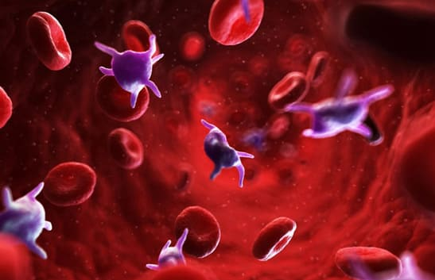
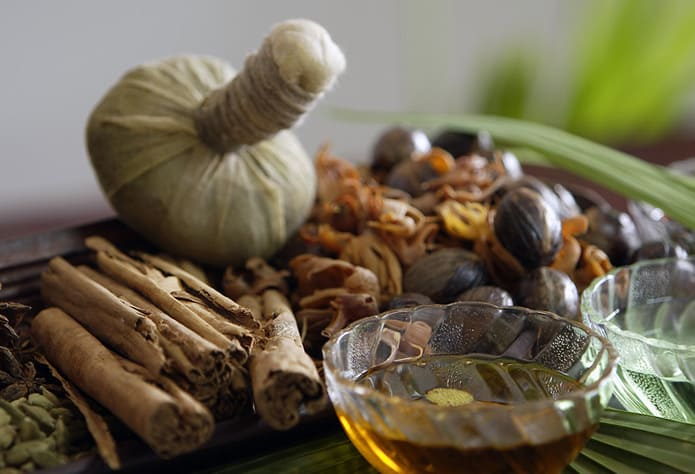
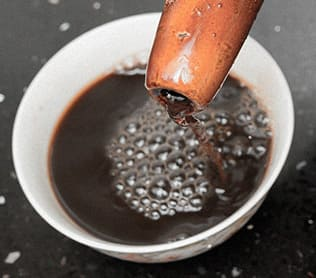
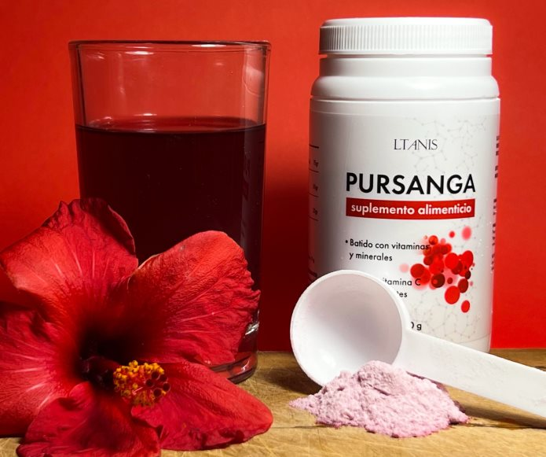
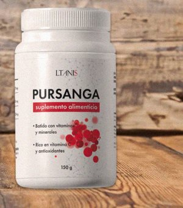
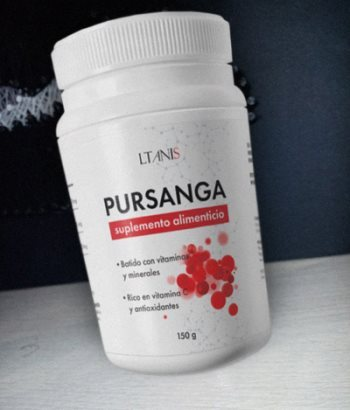

Las toxinas en la sangre minan la salud y arruinan la vida. Comparto mi experiencia de limpieza según los cánones de la medicina oriental + dar instrucciones.
Sobre mí: Hace 3 años trabajaba como simple programador y soñaba con convertirme en jefe de departamento. Ahora soy una especialista certificada en prácticas ayurvédicas, ayudo a las personas a encontrar la armonía y a encontrarse a sí mismas.
¿Qué hacer cuando todo se descontrola, persigue los problemas y trae problemas de salud? ¡Buscar la causa de lo que ocurre! En el 99% de los casos, el problema está en nosotros mismos, o mejor dicho, en nuestra sangre. ¿Por qué estoy seguro de esto? Porque yo mismo pasé por ello.
Los problemas se derramaron en un flujo interminable
Los problemas en el trabajo (en vez de a mí, ascendieron a un colega furtivo) y en la vida personal (la chica me engañó en la víspera de la boda) desestabilizaron, perturbaron la paz mental y minaron la salud. Siempre me interesó la medicina oriental, así que empecé a buscar una solución en esta dirección. Y descubrí que la culpa la tienen las toxinas que se acumulan en la sangre a lo largo de los años de vida. Sí, sí, nuestra sangre es como el aceite del motor, absorbe sustancias nocivas que interfieren en el trabajo del cuerpo y alteran el equilibrio interno de la vitalidad. De ahí los problemas de salud, la falta de tranquilidad, la inestabilidad en las finanzas, la carrera y la vida personal. Una persona experta me aconsejó el Panchakarma, un tratamiento de purificación que practican los monjes tibetanos y los devotos del Ayurveda.
La vida en un monasterio, las reglas estrictas y el ritual
Escuché la recomendación, me tomé unas vacaciones y me fui al Tíbet una semana después. El abad del monasterio me ofreció quedarme con ellos durante un mes como novicio. Pero al mismo tiempo era necesario seguir las reglas y el reglamento interno:
¿Te imaginas cómo sufrí? No fue fácil para mí, una persona activa y sociable que no tiene reparos en beber whisky y fumar un cigarrillo. Recuerdo especialmente una decocción de hojas de ortiga, una mugre poco común. La bebida es muy amarga, tiene un olor y un sabor desagradables. Como decían los monjes, es exactamente lo que les ayuda a mantener la tranquilidad, conservar la salud y prolongar la vida. Y todo gracias a su potente efecto limpiador destinado a restablecer el equilibrio energético interno.
Un mes en el Tíbet me cambió por dentro y por fuera
Tengo que reconocer que el efecto del Panchakarma es increíble. Ya no me atormentaban las preocupaciones, ya no me culpo de los fracasos, los dolores de cabeza crónicos pasaron, mi salud mejoró, mi corazón dejó de molestarme. Me volví más equilibrado y responsable, mi intuición se agudizó y mi vida personal mejoró. En el monasterio, recibí una oferta para formarme y convertirme en mentor de quienes se encontraran en una situación similar. ¿Podría haber soñado que mi vida cambiaría tan drásticamente para mejor? No, ni siquiera me atrevía a pensarlo.
El resultado es sorprendente, y "accesible" para todos, por así decirlo.
Los monjes dijeron que para un efecto duradero se someten a un procedimiento de limpieza 2 veces al año. ¿Y cómo pueden beber voluntariamente esa mierda? Personalmente, no estaba dispuesto a repetir esta experiencia.
Antes de partir, el abad me habló de Pursanga que es una herramienta que está previsto lanzar a la producción en masa. Se elabora según las antiguas recetas de los monjes budistas. Contiene ortiga, arándanos y saúco. Tuve la oportunidad de probar la bebida. El sutil aroma y el delicioso sabor no se pueden comparar con la amargura del caldo de ortiga puro.
Pero lo más importante es que la Pursanga combina todos los beneficios de un ritual de limpieza en una sola taza. Así que no es necesario en absoluto ir al Tíbet, vivir durante un mes según las reglas y mandamientos de los monjes y negarse a todo. Es un verdadero hallazgo para todos los que se preocupan por la salud y se esfuerzan por cambiar su vida a mejor.
Ahora tomo regularmente el tratamiento de Pursanga que pasó a la producción en serie y no podía sentirse mejor. Las materias primas para ello son cultivadas y cosechadas por los propios monjes. Esto garantiza al 100% la alta calidad y el origen natural de todos los componentes. Como poseedor de conocimientos ayurvédicos, tuve la suerte de llegar a un acuerdo con el fabricante de la bebida para su distribución en masa.
Ahora todos los que piden Pursanga a través de mi enlace personal recibirán un 50% de descuento. Para ello, sólo tienes que hacer clic en el botón de abajo y rellenar el formulario de pedido. Así que no demores el cuidado de tu propia salud: pide Pursanga y vive en armonía contigo mismo.
Vaya, ¡qué experiencia tan interesante tuviste! Estoy encantada, yo misma tengo muchas ganas de ir a la India en un viaje especial con peregrinación a lugares sagrados, pero de alguna manera lo pospongo todo. ¡Y tú acabas de inspirarme!
Solía tomar polvo de neem, pues realmente tiene una amplia gama de indicaciones: desde la desintoxicación total hasta la belleza y la juventud. Es cierto que los fondos originales de materias primas de alta calidad cuestan bastante dinero, y puedes romper la banca si pides un tratamiento para toda la familia (y yo tengo una bastante grande). Me fijé en el precio de Pursanga y lo compré enseguida - gente, escuchen, hay una composición tan tremenda de ingredientes allí, y todo es a un precio varias veces inferior a lo que se puede encontrar en las tiendas y farmacias.
Recibí el paquete, preparé una taza y me dejé llevar por el aroma y el sabor. Es delicioso, y si es tan útil como dices, ¡es una bomba!
Hace poco, mi padre fue al Tíbet, también vivió allí y adquirió cierta iluminación y experiencia. El estilo de vida es bastante "espartano", sólo piensas en cómo sobrevivir y no morir en un mes. Es cierto que los cambios son realmente tremendos, volvió siendo una persona diferente. Dejaron de dolerle las articulaciones y la espalda, perdió mucho peso, se olvidó de la hipertensión, mejoró su memoria, parecía tener 20 años menos. Y por primera vez después del divorcio con mi madre, lo vi en una compañía con una mujer de mi edad, por cierto. Estoy orgullosa de mi padre, fue una experiencia muy gratificante para él.
Bien por tu padre: se fue de vacaciones, consiguió tanto la experiencia que quería como ver el mundo. Probablemente debería hacer el mismo recorrido para mi madre, después de la muerte de mi padre se marchitó por completo. Espero que te sirva de ayuda.
Sí, deberías hacerlo, un cambio de escenario será definitivamente beneficioso. Y si aún así consigues cambiar tu forma de pensar y tu perspectiva de la vida, entonces es aún más milagroso.
Guau, estuve tomando Pursanga por la mañana desde hace un par de meses y acabo de descubrir que ayuda a limpiar el cuerpo. Ahora que lo pienso, ¡me siento realmente mucho mejor! Y yo que pensaba que se trataba de una bebida especial originaria de la India, pero, bueno, no soy el crayón más brillante de la caja, supongo ;)
Nunca había oído hablar de algo así, pero me interesó mucho. Y lo pedí mientras todavía hay buenos descuentos.
¿Vivir en un monasterio y seguir todas esas locas reglas? ¡Al diablo con eso! Gente, están locos, hay tantas oportunidades hoy en día. Hace poco fui a un centro turístico en la India, donde lo hicieron todo según el Ayurveda: todos los exámenes, procedimientos, un montón de recomendaciones, y me dieron frascos con cosas para llevar. Sí, a veces hay que pagar un poco por ello, pero hay que pagar por la comodidad, ya sabes.
No todo el mundo tiene la oportunidad de desembolsar un montón de dinero para una semana de rehabilitación. Me fijé en lo que costaría una visita de este tipo: para ello, necesito vender la casa o pedir un préstamo. Y aquí tienes a alguien que lo tiene todo calculado, basándose en su propia experiencia, e incluso ofrece una solución asequible al problema. Pero cada cual con lo suyo.
Qué tema tan interesante planteas. Leí tu blog y me di cuenta de que nunca había limpiado la sangre en mi vida, y debería hacerlo. Recientemente, noté algunos síntomas muy desagradables, además de varios problemas en mi vida personal. Compré Pursanga y decidí hacer yoga, ya pasé por varias de tus lecciones, todo es muy detallado y claro. ¡Gracias por traernos la luz!

El médico me recomendó encarecidamente que me sometiera a un tratamiento de procedimientos de purificación de la sangre mediante una especie de máquina, en la que la sangre pasa por un filtro y vuelve a las venas. Pero soy una terrible cobarde, me dan miedo las agujas, así que primero probaré esta bebida y luego volver a hacer las pruebas y ver. ¡Gracias!
Oí hablar de las propiedades curativas de la ortiga, pero por alguna razón nunca pensé que fuera tan eficaz.
Vi este paquete en la cocina de una amiga, pensé que era una bebida vitamínica normal y corriente, pero ¡esto está tan iluminado! Lo pedí yo misma, realmente quiero sentir el efecto.